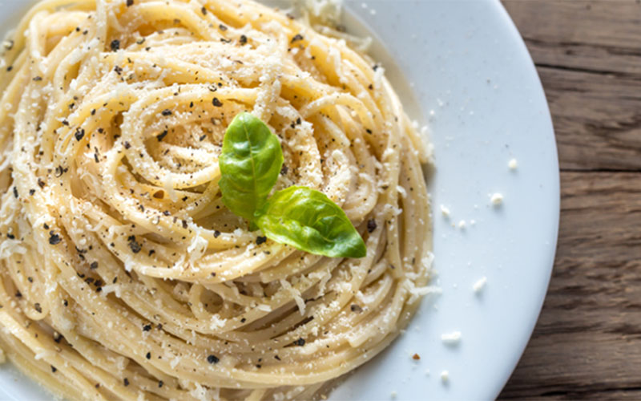

Viajes Gastronómicos por el Mundo
Italia
Gastronomía de Italia

La Republica Italia se encuentra situada en el sur de Europa, en el centro del Mediterráneo. Forma una península que se extiende desde los Alpes hasta las cercanías de la costa africana. Limita al norte con Francia, Suiza, Austria y Eslovenia.
Italia es un país que cuenta con una gran historia, cultura, monumentos, edificaciones y tradiciones.
- Tomate. (Es el ingrediente principal de la cocina italiana tradicional)
- Queso
- Pasta
- Ajo
- Marisco
- Aceite de Oliva
Ingredientes destacados
- La Befana
- El carnaval de Venecia
- Ferragosto
Tradiciones más importantes de Italia
Gastronomía
Audio con la comida tipica
Dario Idoate Film]. (2020, April 18). PIZZA | Spot Publicitario Trattoria [Video]. YouTube. https://youtu.be/ywrLSeDVH5U?feature=shared
Documento con las recetas
- Pizzeria ba ffetto
- Bonciusa
- Dar poeta
Enlaces de Restaurantes locales
Home